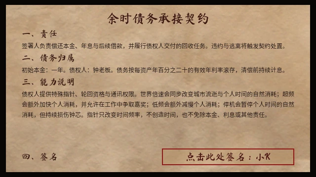

双时间轴
将个人余额与世界日期分开结算，工作时段、债务计息和自然消耗各有口径。
 ROLAND施浩然 · PORTFOLIO
ROLAND施浩然 · PORTFOLIOPROJECT 01 / 个人项目 / 叙事经营 / Godot
时间是寿命，也是货币。

MY WORK / CONTRIBUTION & RESULTS
个人项目｜创意、系统与数值设计、AI 协作制作
Windows 公开归档与浏览器试玩已提供；开发版的 UI 验收单独记录。
THE IDEA
人生第一款游戏，探讨时间与金钱的对应关系，与人生究竟有多少时间属于自己。
将个人余额与世界日期分开结算，工作时段、债务计息和自然消耗各有口径。
用持续计息和跨轮回进度，把一次短期选择放回长期生存压力里。
以固定种子比较市场与赌场规则，先核对余额与费用，再判断系统是否存在可利用的规律。

进入发布页选择 Windows 可执行版本。该页也提供 Web 静态部署包和源码；Web 包需要部署后使用，并非网页内直接试玩。
本页设计与截图来自 v0.95.6 开发记录（2026 年 9 月 29 日），下载入口提供 v0.95.5 公开归档。开发版 UI 尚待手动验收。
下载完整项目书（Word） ↓